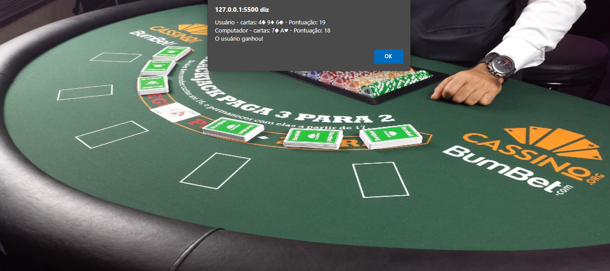

Blackjack
Jogo de Blackjack interativo através do prompt.
O projeto Blackjack foi uma proposta da Labenu para a prática de Javascript
O objetivo aqui era bolar um sistema para que pudesse jogar blackjack através do prompt de comando contra o computador. Consistia em, inicialmente o sorteio de duas cartas, o print destas na tela e a tomada de decisão de comprar ou parar. Após nossa jogada o computador deveria fazer as jogadas necessárias conforme as regras do jogo. A função para sorteio de cada carta foi fornecido pela labenu.
Sobre o projeto: A maior dificuldade aqui foi encontrar a lógica para o laço de repetição para compra de mais cartas. E logo após para o A´s (que no jogo pode valer 1 ou 11 pontos) conseguisse fazer esta troca de valor quando algum dos jogadores ultrapassasse o limite. Gostei bastante do resultado e tenho algumas ideias para melhora na jogabilidade, assim que começarmos a relacionar o javascripit com o html e css.